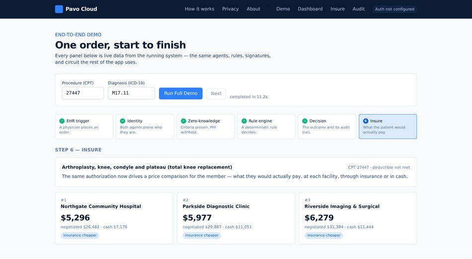
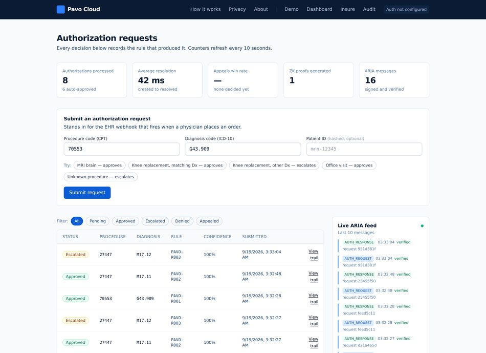

Before a doctor can go ahead with many procedures — an MRI, a knee replacement, an expensive drug — the insurer has to agree to pay for it first. That permission step is called prior authorization. In principle it is a check against the plan's coverage rules. In practice it is a member of staff filling in a form, faxing it or retyping it into an insurer's portal, and then waiting — three to fourteen days, typically. The United States spends around $35 billion a year on this, and most of it buys nothing: the great majority of requests are approved in the end, just late.
Pavo Cloud takes the person out of the start of that process. When a doctor places an order in the hospital's record system, our software assembles the request, signs it so the insurer can prove who sent it, and delivers it straight to the insurer's software. That side checks the signature, applies the insurer's own published coverage rules, and returns a decision naming the exact rule behind it. For a clear-cut request, no person is involved at any point.
What happens when a request is not clear-cut matters more. The software never guesses. If no coverage rule matches, if a signature fails, or if an appeal is not confident enough, the case stops and goes to a human reviewer with the whole file already assembled. No AI language model is allowed to decide an authorization, and the software cannot issue a final denial to a patient at all. Section 5 sets out that boundary in full. The company earns three ways — a fee per request, a monthly subscription per practice, and a yearly fee to insurers for the connection. Round 1 argued all of this was possible; this report is about the software that now does it.
All four planned phases are built and running, and the system now has a public website and a deployable build on top of them. Every figure in this report was measured against the committed code on 19 September 2026 rather than estimated.
Table 1. What was built, in the order it was built.
| Phase | What it does | Status |
|---|---|---|
| Phase 1 | The core loop: a doctor's order becomes an approval with no person involved | Complete |
| Phase 2 | Insure: shows a patient what a procedure will actually cost them | Complete |
| Phase 3 | Identity and appeals: agents prove who they are, and denials are appealed automatically | Complete |
| Phase 4 | Privacy proofs: show a patient qualifies without sending their medical details | Complete |
| Since | A public website explaining the system, a deployable build, and a second model provider | Complete |
Round 1 promised a decision in under five minutes. The software turned out to be far faster, because the slow part was never the thinking — it was the paperwork around it. Taking the network out barely helps, which tells you the remaining time is signing and rule evaluation, not transport.
Table 2. Measured results. A millisecond is one thousandth of a second.
| What was measured | Result |
|---|---|
| A complete authorization decision over the network, start to finish | 83.8 milliseconds |
| The same decision with the network taken out | 80.7 milliseconds |
| Creating a privacy proof about a patient | 523 milliseconds |
| The full six-step demonstration, front to back | 11.3 seconds |
| Automated tests passing, out of 148 | 148 |
Two claims did not survive being built, and it is better to say so here than to be asked. On speed, Round 1 said “under five minutes”; the agents themselves take under a tenth of a second, so five minutes now covers the round trip once the hospital's record system and the insurer's network are included. On profitability, Round 1 implied the company breaks even on each sale in year one. Rebuilt from what the software costs to run, year one is a 31% gross margin — 31 cents of every dollar left after the direct cost of serving that customer — because early customers need a great deal of hand-holding. The 87% figure for year three held.
A doctor places an order in the hospital's electronic health record — the software that holds a patient's chart. That order starts everything below. No person touches any of the seven steps.
Figure 1. One authorization request, end to end. The heavier box at step 5 is a gate: if the signature does not check out, the insurer's software never reads the request at all.
Two organisations letting software talk automatically only works if each can prove who it is. Step 5 is where that happens, and it happens before the request is opened: either the sender is proven genuine, or nothing happens. A judge can test this by changing any part of a request after it has been signed — it is refused outright.
Round 1 described a fixed-rules layer and a learning layer. The built system draws that line harder than promised. No AI language model ever decides an authorization. Models are used only where being approximately right is acceptable — reading a photograph of an insurance card — and every result is scored before it is used.
Table 3. What each layer is allowed to do.
| Layer | What it handles | The guarantee it gives |
|---|---|---|
| Fixed rules (decides) |
Identity checks, coverage rules, price arithmetic, sorting denial reasons | The same input always produces the same answer, and every answer names the exact rule behind it. That is what makes a decision defensible to a regulator. |
| AI models (assist only) |
Reading insurance cards and benefit documents, turning plain English into a medical code, drafting appeal letters | Every result carries a confidence score. Below the threshold it goes to a person. A model is never the last word on whether a patient gets care. |
One consequence is worth stating plainly. If the AI provider went offline tomorrow, prior authorization would keep working, because there is no AI on that path. The same fact explains why processing one request costs a fraction of a cent (section 6.2).
A denial is never the end. The software sorts the insurer's stated reason, then acts on it.
Table 4. What happens after a denial.
| Reason given | What the software does |
|---|---|
| Not covered by the plan | Stops. This is a contract question, not a medical one, so a person decides. No letter is drafted. |
| Missing information, not medically necessary, or any unrecognised reason | Searches the published medical literature, drafts an appeal citing the studies it finds, and scores its own confidence in it. |
| Confidence below 70% | The appeal is held for a person, with the diagnosis, the reason, the score and every study already attached. |
Patient identifiers are scrambled at the door, before anything is saved, and the scrambling is one-way: the original cannot be recovered from it. A test in the codebase checks that the real identifier never appears in storage.
The system goes further using a technique called a zero-knowledge proof. It lets the insurer confirm three things — that the patient is old enough, that the diagnosis is covered, and that the deductible condition is met — without receiving the age, the diagnosis or the amount. One limitation is listed in Table 6.
The code lives in a repository called hwangus922/AI2O-Pavo-Cloud. Work was done in seven batches — one per phase, a round of fixes, and two more since Round 2 opened — and each was reviewed before being merged. Together they come to 21,806 lines of code across 213 file changes.
$ git log --first-parent --date=short --pretty="%h %ad %s" 84c4ca5 84c4ca5 2026-09-18 Turn the demo app into a full website (#8) 8b23760 2026-09-18 Make the demo deployable to a public URL (#6) a13f6cb 2026-09-12 Fix the three failures that break a deployed demo (#5) abc1b5c 2026-09-09 Phase 4: demo flow, audit UI, and a real ZK proof (#4) 99bbb96 2026-09-08 Phase 3: autonomous appeals and cryptographic identity (#3) 5f26194 2026-09-07 Phase 2: Insure price transparency (#2) e48ec54 2026-09-07 Phase 1: autonomous prior authorization core loop (#1) d5ea3a7 2026-09-07 Initial commit $ git log --shortstat 84c4ca5 14 commits · 213 file changes · +21,806 insertions · -577 deletions
Figure 2. The commit history. Each line is a batch of work that was reviewed and merged. Phase 1 was the largest at 9,429 lines. The two entries from 18 September make the system deployable to a public URL and turn the demo into a full website.
An automated test is a small program that checks the main program still behaves correctly. There are 148 of them and they all pass. They matter more than the line count, because they are what turns a claim in this report into something a judge can verify with one command.
$ .venv/bin/python -m pytest tests/test_appeals.py .............................. [ 20%] ............. [ 29%] tests/test_flow.py ................... [ 41%] tests/test_insure.py ............................... [ 62%] ........... [ 70%] tests/test_persistence.py ....... [ 75%] tests/test_rules.py ............... [ 85%] tests/test_zk.py ...................... [100%] 148 passed, 1 warning in 24.45s
Figure 3. The full test suite; each dot is one passing test. Among the things they prove: every decision records the rule that produced it, an unmatched request goes to a human rather than being guessed at, a tampered message is refused, and a real patient identifier never reaches storage.
The screens below are the live software, not mock-ups. Both were captured on 19 September 2026, against the code in the log above.

Figure 4. The guided demonstration after a single click. All six steps — order, identity, privacy proof, rules, decision, price — run with no further input and finish in 11.3 seconds. The last step prices the same operation at five facilities: a spread of $2,475 for identical care.

Figure 5. The dashboard. Every row carries the rule that produced it, in the RULE column. The two amber rows are knee replacements whose diagnosis did not match the covered condition; both wait for a human reviewer with their files already assembled. Average resolution across the eight: 42 milliseconds.
One principle runs through every part of the system: the safe outcome is the default, not the exception. When the software is unsure it does not guess. It stops and hands the case to a person, with the file already prepared.
Table 5. What happens when something goes wrong.
| If this happens | The software does this, automatically | A person is involved |
|---|---|---|
| No coverage rule matches the request | Marks it unclear and routes it to a human reviewer. There is no path by which an unmatched request is approved or denied. | Within 4 hours, insurer's clinical reviewer |
| A message has been tampered with | Refuses it before reading it, and records the refusal with the reason. | Immediate security alert |
| An appeal scores below 70% confidence | Holds it. Nothing is sent to the insurer. Reviewer notes are written automatically. | Within 1 working day, provider's appeals staff |
| The AI provider goes offline | Appeal drafting falls back to a placeholder scored zero, which is below the threshold, so every appeal escalates. Authorization itself is unaffected. | None required |
| The medical literature service is unreachable | Finishes the appeal with no citations and records the failure. Confidence drops, which pushes it to a person. | Follows the appeal route above |
| An appeal is rejected by the insurer | Marks it unclear. The software cannot issue a final denial to a patient. | Always, a licensed reviewer |
| Approval rates drift by demographic | Quarterly review across age, geography and diagnosis. Any rule causing a disparity is suspended to human review. | Quarterly, clinical and compliance |
Escalating a case is a routing decision, not a backlog. Every case handed to a person arrives complete: the medical details, the rule that fired, the signature check, the denial reason, the confidence score and any studies found. The bottleneck Round 1 identified was never medical judgement — it was the paperwork wrapped around it.
These are real limitations of a prototype. We would rather state them than be caught by them.
Table 6. Known gaps and what each needs.
| Gap | What it needs |
|---|---|
| The privacy proof reveals which covered condition a patient has | A more advanced circuit design. Scoped for the next phase. |
| The proof's setup was done on one machine | A proper multi-party ceremony before any real use. Not safe for production as it stands. |
| Provider identity is trusted, not verified | A live lookup against the federal provider registry. One integration. |
| Facility prices are generated, not gathered | The voice agent that calls facilities, plus the price files insurers must now publish. |
| Five coverage rules, not a rule library | Clinical staff encoding each insurer's published criteria. This is the largest cost in our model and the real barrier to a competitor. |
| The learning layer is not built | Deliberate. Until it exists, anything without a definitive rule goes to a person — which is the correct default anyway. |
Pavo earns in three ways: a fee for each request, a monthly subscription per medical practice, and a yearly fee to insurers for the connection itself. The figures below are built up from customer counts and request volumes, not from a growth rate applied to a starting number. The full workbook accompanies this report.
Table 7. Revenue, built up from customers.
| Source | 2026 | 2027 | 2028 |
|---|---|---|---|
| Medical practices served (average) | 55 | 330 | 1,400 |
| Insurers connected (average) | 11 | 84 | 160 |
| Requests processed | 171,600 | 1,647,360 | 8,736,000 |
| Fees per request, at $3.00 | $514,800 | $4,942,080 | $26,208,000 |
| Practice subscriptions, at $400/month | $264,000 | $1,584,000 | $6,720,000 |
| Insurer connection fees, at $20,000/year | $220,000 | $1,680,000 | $3,200,000 |
| Total revenue | $998,800 | $8,206,080 | $36,128,000 |
The $3.00 fee is 85–92% below the $15–$40 an insurer spends handling a request by hand today, which is what makes the switch easy to justify.
Servers are not the expense. Processing one request costs about six hundredths of a cent, because the deciding path uses no AI models at all. The real cost is clinical staff translating each insurer's published rules into the fixed rules the software applies — the largest line in every year, and the reason margins improve with scale rather than with technology.
Table 8. Cost of serving customers, and what is left.
| Cost | 2026 | 2027 | 2028 |
|---|---|---|---|
| Clinical staff writing coverage rules | $189,000 | $455,000 | $1,080,000 |
| Setting customers up | $224,000 | $476,000 | $1,428,000 |
| Customer support | $92,000 | $190,000 | $784,000 |
| Servers and storage | $54,000 | $198,000 | $900,000 |
| AI model usage (documents and appeals only) | $11,000 | $62,000 | $280,000 |
| Security and compliance certification | $118,000 | $112,000 | $290,000 |
| Gross profit | $310,800 | $6,713,080 | $31,366,000 |
| Gross margin | 31% | 82% | 87% |
Two standard measures. Acquisition cost is what it costs in sales and marketing to sign one customer. Lifetime value is the profit that customer produces before they leave, stated here over three years, which is deliberately conservative.
Table 9. Customer economics at 2028 rates.
| Measure | Practice | Insurer | Blended |
|---|---|---|---|
| Cost to acquire one customer | $6,000 | $22,000 | $6,699 |
| Value over three years | $58,248 | $51,057 | $57,533 |
| Value per $1 spent acquiring | $9.70 | $2.30 | $8.60 |
| Months to earn the cost back | 3.5 | 15.2 | 4.0 |
Read the insurer column honestly. At $2.30 back per $1 spent and fifteen months to recover it, insurer contracts do not pay for themselves as a product. We fund them anyway, because signing one insurer makes Pavo available to every practice that already submits to it. It is a distribution channel, not a profit centre.
After engineering, sales and admin, the company loses $2.37 million in 2026 and $3.21 million in 2027, then makes $11.23 million in 2028. The deepest point is $5.58 million of cumulative losses, in late 2027.
We are asking for $8.0 million, which covers that trough with roughly twelve months of cushion past breaking even. It is not a shopping list. The three largest spending lines across the plan — $7.46m of engineering, $5.67m of insurer business development and $1.72m of clinical staff encoding coverage rules — come to more than the raise on their own, and most of that is paid for out of revenue as it arrives. What the raise funds is the part that has to come before any revenue does: the start of the clinical rule library, the security certification no insurer will sign without, and the engineering to close the gaps in Table 6.
The assumption most likely to be wrong is the number of practices, not the price. If all four of our main assumptions are wrong at once, 2028 revenue is $13.8 million rather than $36.1 million: a smaller company, but still a real one.